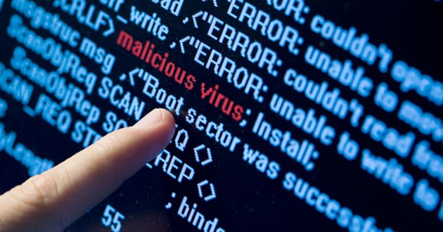
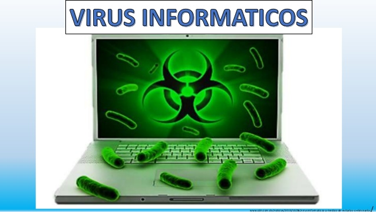
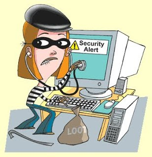

CONTENIDO
CONOCER LOS TIPOS DE VIRUS QUE SE PRESENTAN EN LA WEB Y CUÁLES SON SUS EFECOS EN UNA PC
Virus Informático
Un virus o virus informático es un software que tiene por objetivo de alterar el funcionamiento normal de cualquier tipo de dispositivo informático, sin el permiso o el conocimiento del usuario principalmente para lograr fines maliciosos sobre el dispositivo. Los virus, habitualmente, reemplazan archivos ejecutables por otros infectados con el código de este.
Los virus pueden destruir, de manera intencionada, los datos almacenados en una computadora, aunque también existen otros más inofensivos, que solo producen molestias o imprevistos.

Los virus informáticos tienen básicamente la función de propagarse a través de un software, son muy nocivos y algunos contienen además una carga dañina (payload) con distintos objetivos, desde una simple broma hasta realizar daños importantes en los sistemas, o bloquear las redes informáticas generando tráfico inútil. El funcionamiento de un virus informático es conceptualmente simple.
Se ejecuta un programa que está infectado, en la mayoría de las ocasiones, por desconocimiento del usuario. El código del virus queda residente (alojado) en la memoria RAM de la computadora, incluso cuando el programa que lo contenía haya terminado de ejecutar. El virus toma entonces el control de los servicios básicos del sistema operativo, infectando, de manera posterior, archivos ejecutables que sean llamados para su ejecución. Finalmente se añade el código del virus al programa infectado y se graba en el disco, con lo cual el proceso de replicado se completa.
Virus Informático y Sistemas Operativos
Los virus informáticos afectan en mayor o menor medida a casi todos los sistemas más conocidos y usados en la actualidad.
Cabe aclarar que un virus informático mayoritariamente atacará solo el sistema operativo para el que fue desarrollado, aunque ha habido algunos casos de virus multiplataforma.
MS-Windows y Android
Las mayores virus de josueees incidencias se dan en el sistema operativo Windows y Android debido, entre otras causas:

• Su gran popularidad, como sistemas operativos, entre los computadores personales y dispositivos móviles. Se estima que, en 2007, un 90 % de ellos usaba Windows.[cita requerida] Mientras que Android tiene una cuota de mercado de 80 % en 2015. Esta popularidad basada en la facilidad de uso sin conocimiento previo alguno, motiva a los creadores de software malicioso a desarrollar nuevos virus; y así, al atacar sus puntos débiles, aumentar el impacto que generan.
• Falta de seguridad en Windows plataforma (situación a la que Microsoft está dando en los últimos años mayor prioridad e importancia que en el pasado). Al ser un sistema tradicionalmente muy permisivo con la instalación de programas ajenos a éste, sin requerir ninguna autentificación por parte del usuario o pedirle algún permiso especial para ello en los sistemas más antiguos. A partir de la inclusión del Control de Cuentas de Usuario en Windows Vista y en adelante (y siempre y cuando no se desactive) se ha solucionado este problema, ya que se puede usar la configuración clásica de Linux de tener un usuario administrador protegido, pero a diario usar un Usuario estándar sin permisos se ve desprotegido ante una amenaza de virus.
• Software como Internet Explorer y Outlook Express, desarrollados por Microsoft e incluidos de forma predeterminada en las versiones anteriores de Windows, son conocidos por ser vulnerables a los virus ya que éstos aprovechan la ventaja de que dichos programas están fuertemente integrados en el sistema operativo dando acceso completo, y prácticamente sin restricciones, a los archivos del sistema. Un ejemplo famoso de este tipo es el virus ILOVEYOU, creado en el año 2000 y propagado a través de Outlook. Hoy en día Internet Explorer ha sido separado de Windows y Outlook Express fue descontinuado.
• La escasa formación de un número importante de usuarios de estos sistemas, lo que provoca que no se tomen medidas preventivas por parte de estos, ya que estos sistemas están dirigidos de manera mayoritaria a los usuarios no expertos en informática. Esta situación es aprovechada constantemente por los programadores de virus.
Unix y Derivados
En otros sistemas operativos como las distribuciones GNU/Linux, BSD, Solaris, Mac OS X iOS y otros basados en Unix las incidencias y ataques son raros. Esto se debe principalmente a:
• Los usuarios de este tipo de Sistemas Operativos suelen poseer conocimientos mucho mayores a los de los usuarios comunes de sistemas o cuenten con recursos para contratar mantenimiento y protección mayores que en Windows.
• Tradicionalmente los programadores y usuarios de sistemas basados en Unix han considerado la seguridad como una prioridad por lo que hay mayores medidas frente a virus, tales como la necesidad de autenticación por parte del usuario como administrador o root para poder instalar cualquier programa adicional al sistema. En Windows esta prestación existe desde Windows Vista.
• Los directorios o carpetas que contienen los archivos vitales del sistema operativo cuentan con permisos especiales de acceso, por lo que no cualquier usuario o programa puede acceder fácilmente a ellos para modificarlos o borrarlos. Existe una jerarquía de permisos y accesos para los usuarios.
• Relacionado al punto anterior, a diferencia de los usuarios de Windows XP y versiones anteriores de Windows, la mayoría de los usuarios de sistemas basados en Unix no pueden normalmente iniciar sesiones como usuarios "administradores' o por el super usuario root, excepto para instalar o configurar software, dando como resultado que, incluso si un usuario no administrador ejecuta un virus o algún software malicioso, éste no dañaría completamente el sistema operativo ya que Unix limita el entorno de ejecución a un espacio o directorio reservado llamado comúnmente home. Aunque a partir de Windows Vista, se pueden configurar las cuentas de usuario de forma similar.
• Estos sistemas, a diferencia de Windows, son usados para tareas más complejas como servidores que por lo general están fuertemente protegidos, razón que los hace menos atractivos para un desarrollo de virus o software malicioso.
• En el caso particular de las distribuciones basadas en GNU/Linux y gracias al modelo colaborativo, las licencias libres y debido a que son más populares que otros sistemas Unix, la comunidad aporta constantemente y en un lapso de tiempo muy corto actualizaciones que resuelven bugs y/o agujeros de seguridad que pudieran ser aprovechados por algún malware.
Otros Sistemas Operativos
La mayoría de equipos contienen un sistema operativo de disco de la década de 1990 (equipos de 8, 16 y 32 bits) han sufrido de las diferentes variantes de virus, principalmente de sector de arranque y de ficheros infectados.2 La única excepción parecen haber sido las versiones de CP/M, CP/M-86 y DOS Plus, pero no así su descendiente DR-DOS. En los directorios de BBS y la incipiente Internet, siempre está presente un apartado de antivirus. Sin embargo, las versiones más actualizadas de estos sistemas operativos solo lo contemplan como algo histórico, al no haber desarrollos específicos para el OS (lo que no elimina, por ej., los ataques a través de navegado web). Esta pujanza se basa sobre todo en videojuegos que necesitan tener el disquete desprotegido de escritura para almacenar puntuaciones o estados del juego, o en determinadas protecciones. Varios están situados en ROM, por lo que no es posible infectar al sistema en sí, pero al necesitar cargar parte desde el disquete, no se realiza comprobación.
• Commodore Amiga/Amiga OS: Son bastante numerosos, hasta el punto de que lo primero que haces cuando recibes un disco de terceros es escanearlo por si acaso. Se conocen al menos 548 virus.
• Atari ST/Atari TOS: Tiene el primer caso de virus de plataforma cruzada: los virus Aladinn y Frankie se escriben para el emulador de Apple Macintosh Aladinn.4 Su compatibilidad con el formato de disco de MS-DOS provoca que se den casos de discos ST infectados por virus de sector de DOS (sin efecto para el equipo), por lo que sus antivirus los contemplan, para dar protección a los emuladores de PC por soft y hard de la plataforma.
• Acorn Archimedes/RISC OS: Menos conocidos por estar casi restringido al mercado británico, existen al menos 10 antivirus: VProtect, VZap, KillVirus, Hunter, Interferon, IVSearch, Killer, Scanner, VirusKill, VKiller.
• MS-DOS/DR-DOS: el paraíso del virus en aquellos tiempos, con algunos de los primeros en su clase. De los proveedores de antivirus de entonces sobreviven hoy McAfee y Symantec, el resto entraron en el mercado con Microsoft Windows.
• Commodore 64: BHP VIRUS, Bula.
• Apple II: ostenta uno de los primeros virus, el Elk Cloner de 1982.
• Apple Macintosh/Mac OS Classic: las versiones para procesadores 680x0 y PowerPC son infectados por virus específicos (la emulación del 680x0 en los PowerPC los hace vulnerables a algunos de los viejos virus, pero no a todos) como por virus de macro para MS Office. Los cambios de plataforma actúan de barrera para, por ej., los virus de sector de arranque. La aparición de Mac OS X marca un punto y aparte en los virus para Mac; aunque no supone su desaparición, los reduce notablemente.
Características
Dado que una característica de los virus es el consumo de recursos, los virus ocasionan problemas tales como: pérdida de productividad, cortes en los sistemas de información o daños a nivel de datos.
Una de las características es la posibilidad que tienen de diseminarse por medio de réplicas y copias. Las redes en la actualidad ayudan a dicha propagación cuando éstas no tienen la seguridad adecuada.
Otros daños que los virus producen a los sistemas informáticos son la pérdida de información, horas de parada productiva, tiempo de reinstalación, etc.
Hay que tener en cuenta que cada virus plantea una situación diferente.
Métodos de Propagación
Existen dos grandes clases de contagio. En la primera, el usuario, en un momento dado, ejecuta o acepta de forma inadvertida la instalación del virus. En la segunda, el programa malicioso actúa replicándose a través de las redes. En este caso se habla de gusanos.
En cualquiera de los dos casos, el sistema operativo infectado comienza a sufrir una serie de comportamientos anómalos o imprevistos. Dichos comportamientos pueden dar una pista del problema y permitir la recuperación del mismo.
Dentro de las contaminaciones más frecuentes por interacción del usuario están las siguientes:
• Mensajes que ejecutan automáticamente programas (como el programa de correo que abre directamente un archivo adjunto).
• Ingeniería social, mensajes como «ejecute este programa y gane un premio», o, más comúnmente: «Haz 2 clics y gana 2 tonos para móvil gratis».
• Entrada de información en discos de otros usuarios infectados.
• Instalación de software modificado o de dudosa procedencia.
En el sistema Windows puede darse el caso de que la computadora pueda infectarse sin ningún tipo de intervención del usuario (versiones Windows 2000, XP y Server 2003) por virus como Blaster, Sasser y sus variantes por el simple hecho de estar la máquina conectada a una red o a Internet.
Este tipo de virus aprovechan una vulnerabilidad de desbordamiento de buffer y puertos de red para infiltrarse y contagiar el equipo, causar inestabilidad en el sistema, mostrar mensajes de error, reenviarse a otras máquinas mediante la red local o Internet y hasta reiniciar el sistema, entre otros daños.
En las últimas versiones de Windows 2000, XP y Server 2003 se ha corregido este problema en su mayoría.
Métodos de Protección
Los métodos para disminuir o reducir los riesgos asociados a los virus pueden ser los denominados activos o pasivos.
Activos
• Antivirus: son programas que tratan de descubrir las trazas que ha dejado un software malicioso, para detectarlo y eliminarlo, y en algunos casos contener o parar la contaminación. Tratan de tener controlado el sistema mientras funciona parando las vías conocidas de infección y notificando al usuario de posibles incidencias de seguridad. Por ejemplo, al verse que se crea un archivo llamado Win32.EXE.vbs en la carpeta C:\Windows\%System32%\ en segundo plano, ve que es comportamiento sospechoso, salta y avisa al usuario.
• Filtros de ficheros: Consiste en generar filtros de ficheros dañinos si el computador está conectado a una red. Estos filtros pueden usarse, por ejemplo, en el sistema de correos o usando técnicas de firewall. En general, este sistema proporciona una seguridad donde no se requiere la intervención del usuario, puede ser muy eficaz, y permitir emplear únicamente recursos de forma más selectiva.
• Actualización automática: Consiste en descargar e instalar las actualizaciones que el fabricante del sistema operativo lanza para corregir fallos de seguridad y mejorar el desempeño. Dependiendo de la configuración el proceso puede ser completamente automático o dejar que el usuario decida cuándo instalar las actualizaciones.
Pasivos
Para no infectar un dispositivo, hay que:
• No instalar software de dudosa procedencia.
• No abrir correos electrónicos de desconocidos ni adjuntos que no se reconozcan
• Usar un bloqueador de elementos emergentes en el navegador.
• Usar la configuración de privacidad del navegador.
• Activar el Control de cuentas de usuario.
• Borrar la memoria caché de Internet y el historial del navegador.
• No abrir documentos sin asegurarnos del tipo de archivo. Puede ser un ejecutable o incorporar macros en su interior.
Tipos de Virus
Existen diversos tipos de virus, varían según su función o la manera en que este se ejecuta en nuestra computadora alterando la actividad de la misma, entre los más comunes están:
• Recycler:
Consiste en crear un acceso directo de un programa y eliminar su aplicación original, además al infectar un pendrive convierte a toda la información en acceso directo y oculta el original de modo que los archivos no puedan ser vistos, pero con la creación de un archivo batch que modifique los atributos de los archivos contenidos en el pendrive, estos podrían ser recuperados.
• Troyano:
Consiste en robar información o alterar el sistema del hardware o en un caso extremo permite que un usuario externo pueda controlar el equipo.
• Bombas lógicas o de tiempo:
Son programas que se activan al producirse un acontecimiento determinado. La condición suele ser una fecha (bombas de tiempo), una combinación de teclas, o ciertas condiciones técnicas (bombas lógicas). Si no se produce la condición permanece oculto al usuario.
• Gusano:
Tiene la propiedad de duplicarse a sí mismo.
• Hoax:
Los hoax no son virus ni tienen capacidad de reproducirse por sí solos. Son mensajes de contenido falso que incitan al usuario a hacer copias y enviarla a sus contactos. Suelen apelar a los sentimientos morales («Ayuda a un niño enfermo de cáncer») o al espíritu de solidaridad («Aviso de un nuevo virus peligrosísimo») y, en cualquier caso, tratan de aprovecharse de la falta de experiencia de los internautas novatos.
• Joke:
Al igual que los hoax, no son virus, pero son molestos, un ejemplo: una página pornográfica que se mueve de un lado a otro, y si se le llega a dar a cerrar es posible que salga una ventana que diga error.
Otros tipos por distintas características son los que se relacionan a continuación:
• Virus residentes:
La característica principal de estos virus es que se ocultan en la memoria RAM de forma permanente o residente. De este modo, pueden controlar e interceptar todas las operaciones llevadas a cabo por el sistema operativo, infectando todos aquellos ficheros y/o programas que sean ejecutados, abiertos, cerrados, renombrados, copiados. Algunos ejemplos de este tipo de virus son: Randex, CMJ, Meve, MrKlunky.
• Virus de acción directa:
Al contrario que los residentes, estos virus no permanecen en memoria. Por tanto, su objetivo prioritario es reproducirse y actuar en el mismo momento de ser ejecutados. Al cumplirse una determinada condición, se activan y buscan los ficheros ubicados dentro de su mismo directorio para contagiarlos.
• Virus de sobreescritura:
Estos virus se caracterizan por destruir la información contenida en los ficheros que infectan. Cuando infectan un fichero, escriben dentro de su contenido, haciendo que queden total o parcialmente inservibles.
• Virus de boot (bot_kill) o de arranque:
Los términos boot o sector de arranque hacen referencia a una sección muy importante de un disco o unidad de almacenamiento CD, DVD, memorias USB, etc. En ella se guarda la información esencial sobre las características del disco y se encuentra un programa que permite arrancar el ordenador.
Este tipo de virus no infecta ficheros, sino los discos que los contienen. Actúan infectando en primer lugar el sector de arranque de los dispositivos de almacenamiento.
Cuando un ordenador se pone en marcha con un dispositivo de almacenamiento, el virus de boot infectará a su vez el disco duro.
Los virus de boot no pueden afectar al ordenador mientras no se intente poner en marcha a este último con un disco infectado. Por tanto, el mejor modo de defenderse contra ellos es proteger los dispositivos de almacenamiento contra escritura y no arrancar nunca el ordenador con uno de estos dispositivos desconocido en el ordenador.
Algunos ejemplos de este tipo de virus son: Polyboot.B, AntiEXE.
• Virus de enlace o directorio:
Los ficheros se ubican en determinadas direcciones (compuestas básicamente por unidad de disco y directorio), que el sistema operativo conoce para poder localizarlos y trabajar con ellos.
Los virus de enlace o directorio alteran las direcciones que indican donde se almacenan los ficheros.
De este modo, al intentar ejecutar un programa (fichero con extensión EXE o COM) infectado por un virus de enlace, lo que se hace en realidad es ejecutar el virus, ya que éste habrá modificado la dirección donde se encontraba originalmente el programa, colocándose en su lugar.
Una vez producida la infección, resulta imposible localizar y trabajar con los ficheros originales.
• Virus cifrados:
Más que un tipo de virus se trata de una técnica utilizada por algunos de ellos, que a su vez pueden pertenecer a otras clasificaciones. Estos virus se cifran a sí mismos para no ser detectados por los programas antivirus. Para realizar sus actividades, el virus se descifra a sí mismo y, cuando ha finalizado, se vuelve a cifrar.
• Virus polimórficos:
Son virus que en cada infección que realizan se cifran de una forma distinta (utilizando diferentes algoritmos y claves de cifrado). De esta forma, generan una elevada cantidad de copias de sí mismos e impiden que los antivirus los localicen a través de la búsqueda de cadenas o firmas, por lo que suelen ser los virus más costosos de detectar.
• Virus multipar titos
Virus muy avanzados, que pueden realizar múltiples infecciones, combinando diferentes técnicas para ello. Su objetivo es cualquier elemento que pueda ser infectado: archivos, programas, macros, discos, etc.
• Virus del fichero
Infectan programas o ficheros ejecutables (ficheros con extensiones EXE y COM). Al ejecutarse el programa infectado, el virus se activa, produciendo diferentes efectos.
• Virus de FAT:
La tabla de asignación de ficheros o FAT (del inglés File Allocation Table) es la sección de un disco utilizada para enlazar la información contenida en éste. Se trata de un elemento fundamental en el sistema. Los virus que atacan a este elemento son especialmente peligrosos, ya que impedirán el acceso a ciertas partes del disco, donde se almacenan los ficheros críticos para el normal funcionamiento del ordenador.
• Virus hijackers:
Son programas que secuestran navegadores de internet principalmente el explorer. Los hijackers alteran las páginas iniciales del navegador e impide que el usuario pueda cambiarla, muestra publicidad en pops ups. Instala nuevas herramientas en la barra del navegador y a veces impiden al usuario acceder a ciertas páginas web. Un ejemplo puede ser no poder acceder a una página de antivirus.
• Virus Zombie:
Son programas que secuestran computadoras de forma que es controlada por terceros. Se utiliza para diseminar virus, keyloggers y procedimientos invasivos en general. Esto puede ocurrir cuando la computadora tiene el firewall y su sistema operativo desactualizado.
• Virus Keylogger:
Este virus se encarga de registrar cada tecla que sea pulsada, en algunos casos también registran los clics. Son virus que quedan escondidos en el sistema operativo de manera que la víctima no tiene como saber que está siendo monitorizada. Los keyloggers se utilizan usualmente para robar contraseñas de cuentas bancarias, obtener contraseñas personales como las del E-mail, Facebook, etc.
Acciones de los Virus
Algunas de las acciones de algunos virus son:
• Unirse a cualquier programa permitiendo su propagación y siendo más costoso liberarse de él.
• Ralentizar el dispositivo.
• Reduciendo el espacio en el disco.
• Mostrando ventanas de forma constante.
• Corrompiendo archivos del dispositivo, en algunos casos archivos vitales para el funcionamiento del dispositivo.
• Descargando archivos o programas basura.
• Apagando o reiniciando su dispositivo.
• Haciendo llamadas a tus contactos u otros números con mayor costo.
• Eliminar todos los datos guardados en el disco duro
WIKIPEDIA La enciclopedia libre. (2019, 22 septiembre). Virus Informático. Recuperado 24 septiembre, 2019, de https://es.wikipedia.org/wiki/Virus_inform%C3%A1tico
ACONTINUACIÓN VIDEOS QUE PROFUNDIZAN EL TEMA:
MindMachineTV. (2017, 10 octubre). ¿Qué son los virus informáticos? [Video de YouTube]. Recuperado 24 septiembre, 2019
Mazthertutoriales. (2018, 7 septiembre). Los Virus de Computadora MAS PELIGROSOS 😨/ NO Instalar.exe [Video de Youtube]. Recuperado 24 septiembre, 2019
Olympos Tops. (2016, 19 julio). Top 5 Virus de Computadora Mas Peligrosos De La Historia - Olympos Tops [Video YouTube]. Recuperado 24 septiembre, 2019